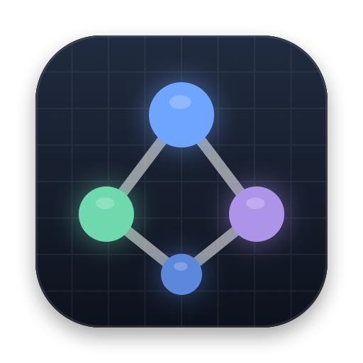

Atlas
Run coding agents side by side, and see where they're working.
Download for MacFree · Version 0.1.0 · Apple Silicon · macOS 27 or later
A workspace per task
Atlas runs Claude Code and Codex on your local projects. Each task gets its own Git workspace and branch, so several agents can work at once.
Review, then merge
Follow each task's changes as they happen. Nothing reaches your project's branch until you merge it.
A live map of your code
Atlas draws your project's systems and shows each agent on the part of the code it's reading or editing.
What you need
- A Mac with Apple silicon and macOS 27 or later.
- Apple's Command Line Tools, for Git. Atlas offers to install them.
- Claude Code, or Codex 0.160.0 or later, installed and signed in. Atlas uses your existing accounts.
Install
- Download and open the ZIP.
- Move Atlas to your Applications folder, then open it.
- Add a Git repository and start a task.
SHA-256 of Atlas.zip, version 0.1.0:a588294ba2d0b7674c0cdd4324cb1d169a4d0949eb2b94a2caf665250f90612c
Atlas doesn't update itself; new versions are posted here, with release notes. Help is in the app's Help menu.
Questions or problems: snehithn5@gmail.com. Help → Reveal Logs shows a log you can attach.
Atlas is free to use; copyright © 2026 Snehith Nayak, all rights reserved. It's provided as is, without warranty of any kind. The agents you run have their own terms. License.